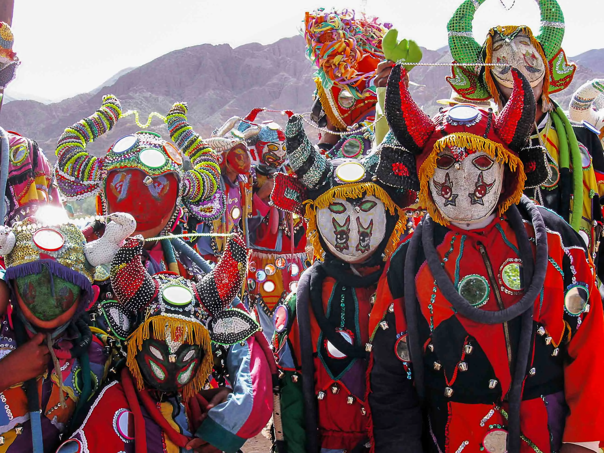

Historia
Argentina es un país ubicado en el sur de América del Sur, compuesto por 23 provincias y la Ciudad Autónoma de Buenos Aires. Con una superficie de 2.780.400 km², es el segundo país más grande de la región. Limita con Chile, Paraguay, Bolivia, Brasil y Uruguay. Fue colonia española hasta 1816, año en que obtuvo su independencia. Su cultura es una mezcla de herencias españolas, inmigrantes y pueblos nativos. Actualmente, es una república democrática y presidencialista, y participa activamente en organismos internacionales como la ONU, Mercosur y la OEA.
Para saber más sobre la historia, visita los siguientes museos: Museos ArgentinosComidas
Mate
Bebida tradicional compartida, tomada amargo o dulce.
Asado
Carne cocinada en parrilla, fundamental en reuniones familiares y con amigos.
Empanadas y Milanesas
Empanadas de diferentes regiones y milanesas, una receta italiana muy popular en Argentina.
Dulce de Leche
Dulce tradicional usado en tortas y alfajores.
Fernet
Bebida popular mezclada con Coca-Cola, especialmente en Córdoba.

Musica y Bailes Tipicos
Tango
Baile sensual y elegante, popular en Buenos Aires.

Folklore
Música y danzas tradicionales como el carnavalito, zamba, y chacarera, asociadas a los gauchos y regiones del norte.
Fiestas y Celebraciones Tradicionales
Día de la Tradición
Homenaje a las costumbres rurales y al autor José Hernández.
Carnaval
Celebración popular con festivales de agua en el Noroeste y comparsas en el Litoral.
